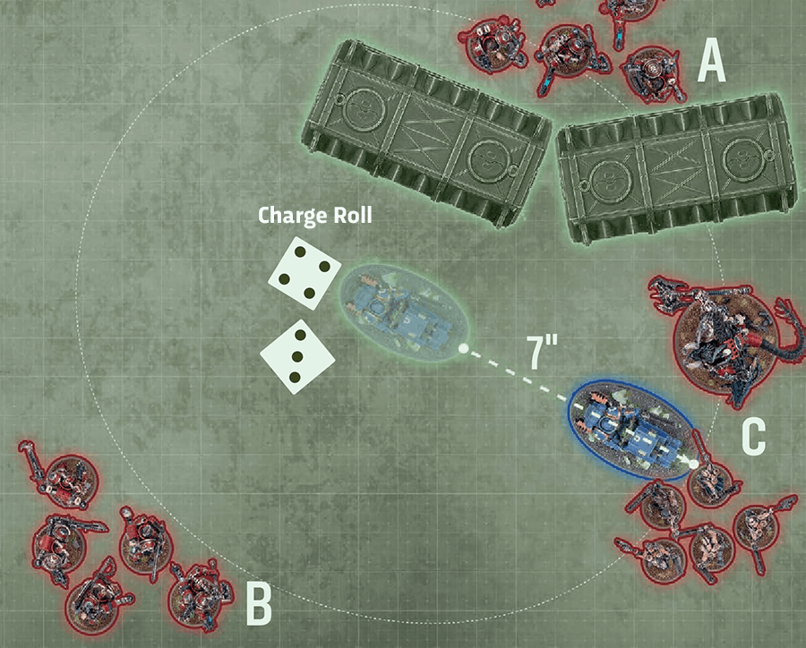

Rules that are triggered at the start of the are resolved now.
Charge Phase
Selecting eligible units, selecting targets, Charge rolls and Charge moves.
The resolves charges with their eligible units one at a time, using the sequence below, until all of their units they choose to charge with have declared a charge and those charges have been resolved.
- Declare Charge: Select one friendly unit that has not declared a charge this phase and is eligible to declare a charge (see below). That unit declares a charge.
A unit is eligible to declare a charge if it is on the battlefield, unless otherwise stated. Here are some rules that prevent a unit from being eligible to declare a charge:
- It is not 12" of one or more enemy units.
- It is engaged.
- It made an advance or this turn.
- Make : Make a by rolling 2D6: the result is the maximum distance for the .
- Attempt Charge: If it is possible to make a , and if still want to, make a with that unit (see below). Otherwise, your unit does not make a . In either case, the charge is then resolved.
Note that, in the absence of modifiers to the , a result of 2 (a double 1) is never sufficient for a unit to complete a , as a unit cannot be (2") when it attempts a charge. Such a roll would therefore result in a failed charge, and the unit would not move.
See also
{kind=link}

Note that in the absence of modifiers to the , a result of 2 (a double 1) is never sufficient for a unit to complete a , as a unit cannot be (2") when it attempts a charge. Such a roll would therefore result in a failed charge, and the unit would not move.
Rules that are triggered at the end of the are resolved now.
MAXIMUM DISTANCE: .
ELIGIBLE IF: Your unit declared a charge this phase.
EFFECT: Your unit moves as described in Moving (03).
BEFORE MOVING: Select one or more enemy units that are 12" of your unit and the maximum distance of your unit; until the end of this move, each of those enemy units is a charge target.
WHILE MOVING:
- Each model must end its move closer to one or more charge targets.
- Each model that can end its move 1" of one or more charge targets must do so.
- Each model that can end its move engaged with one or more charge targets must do so.
AFTER MOVING:
- Your unit must be engaged with all of the charge targets.
- Your unit cannot be engaged with one or more enemy units that are not charge targets.
- Until the end of the turn, each model in your unit has the ability ().